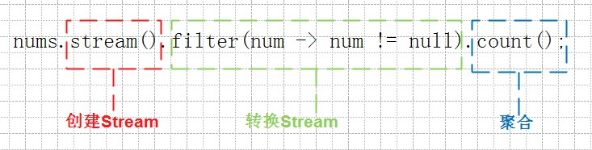
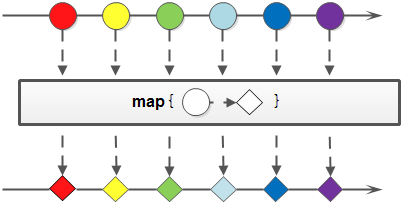

Stream 是 Java8 中处理集合的关键抽象概念，它可以指定你希望对集合进行的操作，可以执行非常复杂的查找、过滤和映射数据等操作。

Stream 中的方法单独拿出来使用的话体现不出其优点，在复杂的操作情况下，Stream 的优势才明显，例如下面这样生成不重复有序随机数的例子，如果用传统的写法代码会很长，还需要 if else 判断，使用临时集合等截断，去重等复杂操作，使用 Stream 的方式的话，逻辑看上去就清晰很多:
1 2 3 4 5 6 7 Stream<Double> stream = Stream.generate(Math::random) .limit(20 ) .filter(x -> x > 0.3 ) .skip(1 ) .distinct() .map(x -> x * 10 ) .sorted();
Stream 的常用方法有:
方法
forEach(Consumer<? super T> action)
peek(Consumer<? super T> action)
filter(Predicate<? super T> predicate)
map(Function<? super T, ? extends R> mapper)
flatMap(Function<? super T, ? extends Stream<? extends R>> mapper)
skip(long n)
limit(long maxSize)
distinct()
reduce(BinaryOperator<T> accumulator)
reduce(T identity, BinaryOperator<T> accumulator)
reduce(U identity, BiFunction<U,? super T,U> accumulator, BinaryOperator<U> combiner)
sorted(Comparator<? super T> comparator)
collect(Collector<? super T,A,R> collector)
collect > Collectors.toList()
collect > Collectors.toSet()
collect > Collectors.toMap()
collect > Collectors.groupingBy()
anyMatch
此外，Function.identity() 比常用，其返回一个函数式接口，这个接口的返回值和输入参数一样，在使用 t -> t 的地方就可以使用它:
1 2 3 4 5 6 7 8 9 static <T> Function<T, T> identity () { return t -> t; }
例如 ns.stream().collect(Collectors.groupingBy(Function.identity(), Collectors.counting()))。
创建 Stream 常用创建 Stream 的方法有:
Collection.stream()
Stream.of()
Stream.iterate()
Stream.generate()
Arrays.stream()
1 2 3 4 5 6 7 8 9 Stream<String> stringStream1 = list.stream(); Stream<String> stringStream2 = Stream.of("taobao" ); Stream<Integer> integerStream1 = Stream.of(1 , 2 , 3 , 5 ); Stream<Integer> integerStream1 = Stream.iterate(1 , item -> item + 1 ).limit(10 );
forEach 遍历集合的元素:
1 2 3 4 5 6 7 8 9 import java.util.Arrays;import java.util.List;public class LambdaTest public static void main (String[] args) List<Integer> ns = Arrays.asList(1 , 2 , 3 , 4 , 5 ); ns.stream().forEach(System.out::println); } }
提示:
如上简单的遍历集合的元素不能体现 forEach 的优势，需要和 Stream 的其他 API 一起使用时才能体现出来
forEach 中不能使用 break, continue 等
由于 Lambda 的本质是匿名内部类，所以其中使用 return 也只是结束内部类的接口实现的逻辑，并不会影响 forEach 所在的代码块
peek peek 和 forEach 比较相似，都可以用来遍历 Stream 中的元素，他们的参数都是一个 Consumer<T>，不同的是 forEach 返回值为 void, peek 的返回值为 Stream<T>，所以 forEach 后不能再链式调用 Stream 的其他 API，而 peek 可以。
filter 对于 Stream 中包含的元素使用给定的过滤函数进行过滤操作，新生成的 Stream 只包含符合条件的元素:
map 对于 Stream 中包含的元素使用给定的转换函数进行转换操作，新生成的 Stream 只包含转换后生成的另一种类型的元素。这个方法有三个对于原始类型的变种方法，分别是：mapToInt，mapToLong 和 mapToDouble。这三个方法也比较好理解，比如 mapToInt 就是把原始 Stream 转换成一个新的 Stream，这个新生成的 Stream 中的元素都是 int 类型，之所以会有这样三个变种方法，可以免除自动装箱/拆箱的额外消耗:

提示: 简单一点说，map 的功能就是进行类型转换。
flatMap 当需要把 2 层的集合扁平化为 1 层的集合 (即List<List<T>> -> List<R>) 时可以使用 flatMap，与 map 类似，都是进行类型转换，但 flatMap 更难理解，我们尝试分析一下，flatMap 的方法声明为 <R> Stream<R> flatMap(Function<? super T,? extends Stream<? extends R>> mapper)，则:
mapper 是一个 Function，说明参数个数为 1，返回值的类型是 Stream (与 BiFunction 进行比较下有啥不同 ?)
mapper 的参数类型的泛型是 T，但其实要求 T 是一个集合如 List<String>，或者数组 (如果不是集合或者数组，就没有压扁这回事了)
mapper 的返回类型的泛型是 Stream<R>，这里的 R 是普通类型如 String，不再是集合
既然 mapper function 是把一个集合转为普通类型的 Stream，则可以
集合:
使用方法引用 Collection::stream (推荐使用)
集合对象调用 stream() 方法返回 Stream 对象
数组:
使用方法引用 Stream::of (推荐使用)
调用 Stream.of(array) 返回 Stream 对象
最后 flatMap 把多个 Stream 合并为一个 Stream，实现了把 Stream<List<T>> 转为 Stream<R>
由于 flatMap 返回值为 Stream<R>，接下来就可以链式调用 Stream 的其他方法继续处理后面的逻辑了。
1 2 3 4 5 6 7 8 9 10 11 12 13 14 15 16 17 18 19 import java.util.Arrays;import java.util.LinkedList;import java.util.List;import java.util.stream.Collectors;public class LambdaTest public static void main (String[] args) List<List<String>> list = new LinkedList<>(); list.add(Arrays.asList("One" , "Two" , "Three" )); list.add(Arrays.asList("Alice" , "Bob" , "Carry" )); List<String> result = list.stream() .flatMap(List::stream) .map(String::toUpperCase) .collect(Collectors.toList()); System.out.println(result); } }
对于 flatMap 的参数 Stream，可以有 2 种方法提供:
集合对象调用 stream() 转为 Stream
方法引用 Collection::stream
下面以把字符串分隔为单词为例:
1 2 3 4 5 6 7 8 9 10 11 12 13 14 15 16 17 18 public class LambdaTest public static void main (String[] args) List<String> t1 = Arrays.asList("Huang Biao" , "Hill Man" ) .stream() .map(e -> Arrays.asList(e.split(" " ))) .flatMap(e -> e.stream()) .collect(Collectors.toList()); List<String> t2 = Arrays.asList("Huang Biao" , "Hill Man" ) .stream() .map(line -> line.split(" " )) .flatMap(Stream::of) .collect(Collectors.toList()); System.out.println(t1); System.out.println(t2); } }
提示: 大多数时候使用 flatMap 可以只使用 flat 功能，与 map 功能分开，这样的好处是更容易理解，而不是在 flatMap 里同时做 flat 和 map 的功能，例如上面先把字符串分割为词的 List<List> 然后再扁平化为 List:
.stream().map(line -> Arrays.asList(line.split(" "))).flatMap(List::stream)
如果直接在 flatMap 中进行字符串分割为词的 List<List> 并且转换为 Stream，则为
.stream().flatMap(e -> Arrays.asList(e.split(" ")).stream())
虽然代码看上去更少了，但理解起来更难一点。
skip 返回一个丢弃原 Stream 的前 N 个元素后剩下元素组成的新 Stream，如果原 Stream 中包含的元素个数小于 N，那么返回空 Stream:
limit 对一个 Stream 进行截断操作，获取其前 N 个元素，如果原 Stream 中包含的元素个数小于 N，那就获取其所有的元素:
Class User 定义一个用户类，后面的例子基于这个类的对象进行演示。
1 2 3 4 5 6 7 8 9 10 11 12 13 14 15 16 17 18 19 20 21 22 23 24 25 26 27 28 29 30 31 32 33 import lombok.Getter;import lombok.Setter;import lombok.ToString;import java.util.Objects;@Getter @Setter @ToString public class User private int id; private String username; private int teamId; public User (int id, String username, int teamId) this .id = id; this .username = username; this .teamId = teamId; } @Override public boolean equals (Object o) if (this == o) return true ; if (o == null || getClass() != o.getClass()) return false ; User user = (User) o; return id == user.id; } @Override public int hashCode () return Objects.hash(id); } }
distinct 顾名思义，去重使用 (调用对象的 equals 方法进行比较):
1 2 3 4 5 6 7 8 9 10 11 12 13 14 15 16 17 18 19 20 21 22 23 24 25 26 27 28 29 import java.util.Arrays;import java.util.List;import java.util.stream.Collectors;public class LambdaTest public static void main (String[] args) List<User> users = data(); List<User> temp = users.stream().distinct().collect(Collectors.toList()); System.out.println(temp); } public static List<User> data () List<User> users = Arrays.asList( new User(1 , "张三" , 1 ), new User(2 , "李四" , 1 ), new User(3 , "王五" , 2 ), new User(4 , "悟空" , 2 ), new User(5 , "悟净" , 2 ), new User(4 , "大圣" , 2 ), new User(1 , "Alice" , 1 ) ); return users; } }
reduce Stream 接口有一些通用的汇聚操作，比如 reduce() 和 collect()；也有一些特定用途的汇聚操作，比如 sum(), max() 和 count()。
1 2 3 4 5 6 7 8 9 10 11 12 13 14 List<Integer> numsWithoutNull = nums.stream().filter(num -> num != null ).collect(Collectors.toList()); List<Integer> ints = Arrays.asList(1 , 2 , 3 , 4 , 5 , 6 , 7 , 8 , 9 , 10 ); int sum1 = ints.stream().reduce((mem, item) -> mem + item).get(); int sum2 = ints.stream().reduce(10 , (mem, item) -> mem + item); int sum3 = ints.stream().mapToInt(n -> n).sum();int [] nums = new int []{1 , 2 , 3 , 4 , 5 , 6 , 7 , 8 };int min = IntStream.of(nums).min().getAsInt();
注意：sum() 方法不是所有的 Stream 对象都有的，只有 IntStream、LongStream 和 DoubleStream 实例才有。
sorted 使用 Comparator 创建排序规则，作为 sorted 的参数进行排序，需要注意的是默认为升序排序，后面一个 reversed 会取反前面的所有 comparator:
1 2 3 4 5 6 7 8 9 10 11 12 13 14 15 16 17 18 19 20 21 22 23 24 25 26 27 28 29 30 31 32 33 34 35 36 37 38 39 40 41 42 43 44 45 46 47 48 49 50 51 52 53 54 55 56 57 58 59 60 61 package lambda;import java.util.Arrays;import java.util.Comparator;import java.util.List;import java.util.stream.Collectors;import static java.util.Collections.reverseOrder;import static java.util.Comparator.comparing;public class LambdaTest public static void main (String[] args) List<User> result = null ; result = data().stream() .sorted(Comparator.comparing(User::getId)) .collect(Collectors.toList()); System.out.println(result); result = data().stream() .sorted(Comparator.comparing(User::getId).reversed()) .collect(Collectors.toList()); System.out.println(result); result = data().stream() .sorted(Comparator.comparing(User::getId).thenComparing(User::getUsername)) .collect(Collectors.toList()); System.out.println(result); result = data().stream() .sorted(comparing(User::getId).thenComparing(reverseOrder(comparing(User::getUsername)))) .collect(Collectors.toList()); System.out.println(result); List<User> users = data(); users.sort(Comparator.comparing(User::getId)); System.out.println(users); } public static List<User> data () List<User> users = Arrays.asList( new User(1 , "张三" , 1 ), new User(2 , "李四" , 1 ), new User(3 , "王五" , 2 ), new User(4 , "悟空" , 2 ), new User(5 , "悟净" , 2 ), new User(4 , "大圣" , 2 ), new User(1 , "Alice" , 1 ) ); return users; } }
提示: 可以静态导入方法简化代码，如上面的 import static java.util.Collections.reverseOrder。
toList 使用 Collectors.toList() 聚合为 List:
1 2 3 List<User> users = data().stream() .filter(user -> user.getId() > 3 ) .collect(Collectors.toList());
toSet 使用 Collectors.toSet() 聚合为 List:
1 2 3 Set<User> users = data().stream() .filter(user -> user.getId() > 3 ) .collect(Collectors.toSet());
可以指定 Set 的类型: Collectors.toCollection(TreeSet::new) 替换 Collectors.toSet()。
toMap 使用 Collectors.toMap() 聚合为 Map，value 为满足条件的对象，例如把 List<User> 转为 Map<Integer, User>，key 为 userId, Value 为 User:
1 2 List<User> users = data(); Map<Integer, User> userMap = users.stream().collect(Collectors.toMap(User::getId, u -> u, (o, n) -> o));
提示: toMap 的第三个参数是可选参数，当 users 中没有重复 ID 的对象时，可以不需要第三个参数；当有重复 ID 时，由于 Map 插入重复 key 会抛异常，第三个参数的 Lambda 函数决定使用哪一个作为 value。
groupingBy 使用 Collectors.groupingBy 进行分组，结果为 Map，key 为分组的条件，value 为满足条件的对象的集合，例如把同一个 team 中的成员放到一组中:
1 2 List<User> users = data(); Map<Integer, List<User>> teamUsers = users.stream().collect(Collectors.groupingBy(User::getTeamId));
只取对象中的某个属性:
1 2 3 4 5 Map<Long, List<Integer>> optionIdWithStarValuesMap = starOptionAnswers.stream().collect( Collectors.groupingBy( QuestionOptionAnswer::getQuestionOptionId, Collectors.mapping(QuestionOptionAnswer::getValue, Collectors.toList()) ));
anyMatch 如果有任何一个元素匹配，返回 true:
1 2 3 4 5 6 7 8 public static void main (String[] args) throws IOException List<Integer> ns = new LinkedList<>(); ns.add(1 ); ns.add(3 ); ns.add(4 ); ns.add(5 ); System.out.println(ns.stream().anyMatch(n -> n > 2 )); }
还要: findFirst(): Returns an Optional describing the first element of this stream, or an empty Optional if the stream is empty.
树结构化一个 List 树形结构的数据，例如地区信息，章节数据等，通常存储到数据库时每个记录存储一行，通过 parentId 来建立树中的父子关系，但是在把数据显示到界面上时需要恢复正常的树形结构，下面的例子把数据库中 2D 的表格数据构造为树结构的数据:
1 2 3 4 5 6 7 public class Chapter private long id; private long parentId; private List<Chapter> children = new LinkedList<>(); }
1 2 3 4 5 6 7 8 9 10 11 12 13 14 15 16 17 18 19 20 21 22 23 24 25 26 27 public List<Chapter> treefyChapters (List<Chapter> flatChapters) Map<Long, Chapter> chapterMap = flatChapters.stream().collect(Collectors.toMap(Chapter::getId, chapter -> chapter, (oldValue, newValue) -> newValue)); chapterMap.forEach((id, chapter) -> { Chapter parent = chapterMap.get(chapter.getParentId()); if (parent != null ) { parent.getChildren().add(chapter); } }); List<Chapter> roots = flatChapters.stream().filter(chapter -> chapter.getParentId() == 0L ).collect(Collectors.toList()); return roots; }
求最小值 1 2 int [] nums = new int [] {1 , 2 , 3 , 4 , 5 , 6 , 7 , 8 };int min = IntStream.of(nums).min().getAsInt();
int 数组转为 List 1 2 3 4 int [] ints = {1 ,2 ,3 }; List<Integer> list1 = IntStream.of(ints).boxed().collect(Collectors.toList()); List<Integer> list2 = Arrays.stream(ints).boxed().collect(Collectors.toList());
频率统计 Word frequency count Java 8
1 2 3 4 5 6 7 8 9 10 11 12 13 14 15 16 17 18 19 public class Test public static void main (String[] args) List<Integer> ns = Arrays.asList(1 , 2 , 3 , 2 , 4 , 3 , 2 ); Map<Integer, Long> map1 = ns.stream().collect(Collectors.groupingBy(Function.identity(), Collectors.counting())); Map<Integer, Long> map2 = ns.stream().collect(Collectors.groupingBy(n -> n, Collectors.counting())); Map<Integer, Integer> map3 = ns.stream().collect(Collectors.groupingBy(Function.identity(), Collectors.summingInt(e -> 1 ))); Map<Integer, Integer> map4 = ns.stream().collect(Collectors.groupingBy(n -> n, Collectors.summingInt(e -> 1 ))); System.out.println(map1); System.out.println(map2); System.out.println(map3); System.out.println(map4); } }
输出:
1 2 3 4 {1=1, 2=3, 3=2, 4=1} {1=1, 2=3, 3=2, 4=1} {1=1, 2=3, 3=2, 4=1} {1=1, 2=3, 3=2, 4=1}
static <T> Function<T,T> identity(): Returns a function that always returns its input argument.
词频统计 1 2 3 4 5 6 7 8 9 10 11 12 13 14 15 public static void main (String[] args) List<String> statements = Arrays.asList( "Breaking News Latest News and Videos" , "Fox News Breaking News Updates Latest News Headlines" ); Map<String, Long> frequency = statements.stream() .map(stmt -> Arrays.asList(stmt.split(" " ))) .flatMap(List::stream) .collect(Collectors.groupingBy(t -> t, Collectors.counting())); System.out.println(frequency); }
输出:
1 {Headlines=1, Updates=1, Breaking=2, and=1, News=5, Latest=2, Fox=1, Videos=1}
提示: 语句中还会有标点符号，多余的空格等，大家根据上面的知识试试怎么处理。